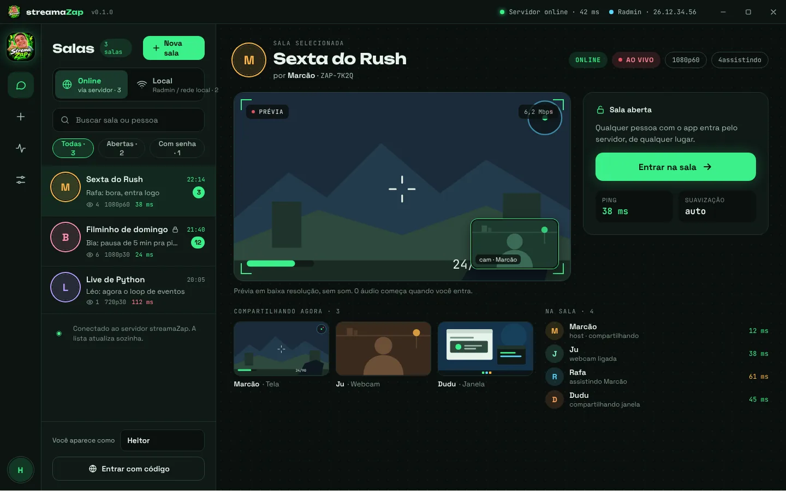

Sua tela ao vivo para os amigos.
Compartilhe a tela, uma janela, a câmera e o som de um app só, em até 1080p a 60 quadros. Pelo Radmin ou na rede local, sem conta, ou pela internet no modo Online.
Na página da versão, baixe o StreamaZap-Setup-<versão>.exe. O app se atualiza sozinho depois.

Feito para assistir junto
Tela ou janela
O monitor inteiro ou só a janela do jogo, codificados pela placa de vídeo, em até 1080p60.
Câmera
Mostre a sua webcam para a sala, além da tela.
Som de um app só
Mande só o som do jogo ou do filme, sem as notificações e o resto do PC.
Qualidade que se ajusta
Cada pessoa recebe a melhor qualidade que a conexão dela aguenta, sem travar a sala dos outros.
Chat na sala
Converse enquanto assiste. As mensagens não são gravadas: somem quando a sala fecha.
Música da sala
Uma fila de vídeos do YouTube tocando ao mesmo tempo para todo mundo.
Local ou Online
Local
Radmin · rede local · sem conta
- As salas aparecem sozinhas para quem está no mesmo Radmin ou na mesma rede.
- Os PCs se falam direto: nada passa pelos nossos servidores.
- Grátis, sempre.
Online
pela internet · beta fechado
- Salas pela internet, passando pelo servidor do streamaZap quando a conexão direta não dá.
- Em teste, gratuito, com a senha do servidor que passamos para quem participa.
- Você entra com a conta do Google, da Microsoft ou com um código enviado ao seu e-mail.
Três passos
- Baixe e instale. Na última versão, baixe o StreamaZap-Setup e abra. Também há uma versão portátil, em .zip.
- Crie uma sala. Em Nova sala, escolha o que mostrar: a tela, uma janela, a câmera ou só o som.
- Chame os amigos. No Radmin ou na rede local, a sala aparece sozinha para eles. No Online, passe o código da sala.